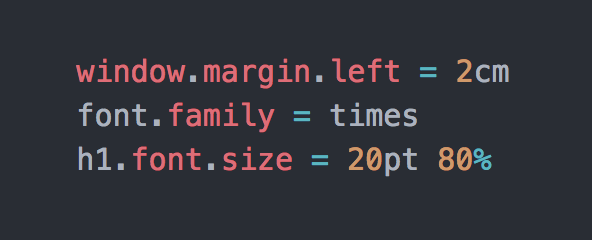

dahai 发表于2023.07.05 ，共有2条评论 。
Tim
Berners-Lee（蒂姆·伯纳斯·李） ，英国科学家，万维网之父，于1989年在欧洲核子研究组织（CERN）正式提出万维网的设想。该网络最初是为了满足世界各地大学和研究所的科学家之间对自动信息共享的需求而设计和开发的，这也是为什么HTML的顶层声明是
document，标签名、文档对象模型的名称也是由此而来。
1990年12月，他开发出了世界上第一个网页浏览器。1993年4月30日，欧洲核子研究组织将万维网软件置于公共领域，把万维网推广到全世界，让万维网科技获得迅速的发展，深深改变了人类的生活面貌。
1991年8月，第一个静态页面诞生了，这是由Tim Berners-Lee发布的，想要告诉人们什么是万维网。从第一个静态页面至今，历史的车轮滚滚向前，一个又一个技术诞生和沉寂。
他创造了超文本标记语言（HTML），并创建了历史上第一个网站。当然，现在只剩下了由 CERN 恢复的网站副本：info.cern.ch
dahai 发表于2023.07.12 ，共有0条评论 。
在HTML迅猛发展的 90 年代，不同的浏览器根据自身的 HTML 语法结构来支持实现不同的样式语言。在最初的 HTML 版本中，由于只含有很少的显示属性，所以用户可以自己决定显示页面的方式。
但是，不同的人对于网页的显示样式要求不一样，于是装饰网页样式的 CSS（层叠样式表，Cascading Style Sheets）诞生了。
早期 CSS 的语法设计看上去类似后来的 JavaScript 语法（当时 JavaScript 尚未存在），实际上，CSS 的这个写法借鉴了 X11 Window System 中的 X 资源。

1994 年，Håkon Wium Lie 最初提出了 CSS 的想法，联合当时正在设计 Argo 的浏览器的Bert Bos，他们决定一起合作设计 CSS，于是创造了 CSS
的最初版本。紧接着，他们在芝加哥的Mosaic and the Web 大会上第一次正式提出了 CSS 的建议，1995 年他们一起再次展示了这个建议。当时 W3C 刚刚建立，W3C 对 CSS
很感兴趣，为此专门组织了一次讨论会。
1996 年 12 月，W3C 推出了 CSS 规范的第一版本。
1997 年，W3C 颁布 CSS1.0 版本 ，CSS1.0 较全面地规定了文档的显示样式，可分为选择器（id、class、element、element和class组合）、样式属性、伪类、
对象几个部分。这一规范立即引起了各方的关注，随即微软和网景公司的浏览器均能支持 CSS1.0，这为 CSS 的发展奠定了基础。
1998 年，W3C 发布了 CSS 的第二个版本，目前的主流浏览器都采用这标准。CSS2 的规范是基于 CSS1 设计的，包含了 CSS1
所有的功能，并扩充和改进了很多更加强大的属性。包括选择器、位置模型、布局、表格样式、媒体类型、伪类、光标样式。
2005 年 12 月，W3C 开始 CSS3 标准的制定，到目前为止该标准还没有最终定稿。
CSS 经历了 20 多年的发展，从 PC 端到移动端，在前端工程化不断进步的今天，随着CSS的规范不断的完善升级，前端业务复杂度越来越高，带来的工程也越来越庞大，我们前端开发者对 CSS
工程化的方案也不断地探索。现在一大批 CSS 预处理和后处理工具涌现，比较流行的 CSS 预处理器有 Sass、Less，CSS 后处理器诸如
clean-css、AutoPrefixer、Rework、PostCSS 等。
那么关于 CSS 将来发展会怎么样？未来 CSS 还能不能胜任自己的角色，会不会有新的模型代替它？对于这些问题，Håkon Wium Lie 认为 CSS
目前还能够胜任，还没有看到能够取代它的新模型出现，新的技术肯定会层出不穷，但应该是对 CSS 的扩展而不是代替。他还表示，我们今天写的 CSS 代码，500 年后的计算机仍然能看懂。


最热评论2条